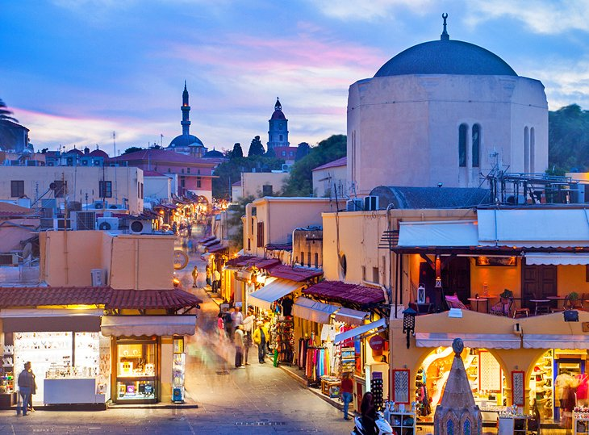

Places to visit
Here are the best places to go while visiting Greece
Mykonos
White buildings, turquoise skies and tanned bodies lining golden sandy beaches. The most popular Greek Island in the Aegean Sea is all about energy and attracts a diverse and upscale crowd that thrives on its stylish nightlife. During the day some privacy can be had in the more secluded north beaches, but the south beaches are all party. Ski, jet-ski, windsurf, horseback ride, parasail or just save up your energy for the evening ahead, like most of your fellow travelers in Mykonos.

Rhodes
By far the largest island of the Dodecanese, also known as the "Island of the Sun God Helios", Rhodes island combines a variety of characteristics that make it unique as a travel destination. The island reveals itself to the eyes of the visitor as a magnificent explosion of colors and activities that combine a mix of interesting sights and relaxation, unique nature, learning and entertainment.. Rhodes Island delivers the ideal climate that offers everyone the opportunity to enjoy memorable holidays. You can swim off its east coast from mid-April to October.
Corfu
Amazing cuisine, unmatched natural beauty, sandy beaches, picturesque villages, more-than-pleasant climate – Corfu is the emerald queen of the Greek Islands. The island is brimming with nature reserves and Corfu is particularly well-known for its unique birdlife. There are so many quiet places in Corfu for you to go and explore. Head to the old salt pans and Corfiot wetlands of Alikes Lefkimmis to spot some of the island’s rarest birds. If you time it right, you might even see the flocks of flamingos that take up residence in the wetlands from time to time.

Acropolis
The Acropolis Museum is a real treasure trove of ancient statues, pottery and other articles from the glory years of Athenian democracy. If your kid loves history, it’s a great place to visit after walking around the Acropolis—it’s about 15-20 minutes’ walk back down the mountainside. The Acropolis Museum is an archaeological site-specific museum, housing more than 3.000 famous artefacts from the Athenian Acropolis, the most significant sanctuary of the ancient city. Located in the historical area of Makriyianni, southeast of the Rock of the Acropolis

Santorini
Santorini is the best romantic holiday destination all over the world. Santorini is the most spectacular island in Greece and one of the geologic treasures of Europe. The five villages of Fira, Oia, Imerovigli, Firostefani, and Akrotiri sit atop the caldera and offer spectacular views into the crater created from a 16th-century BC volcanic eruption. What remains is an incredible sight and a magical setting for island hikes, infinity pools, luxury hotels, clifftop wineries, and dreamy sunset dinners.

Delphi
Its wealth of archaeological treasures combines with its magnificent mountain setting and its importance in Greek mythology to make Delphi one of the most awe-inspiring places to visit in Greece. Delphi lies 180 kilometers northwest of Athens to which it is connected by a regular bus service. It lay in the territory of Phocis on the steep lower slope of Mount Parnassus, about 6 miles (10 km) from the Gulf of Corinth. Delphi is now a major archaeological site with well-preserved ruins. It was designated a UNESCO World Heritage site in 1987.